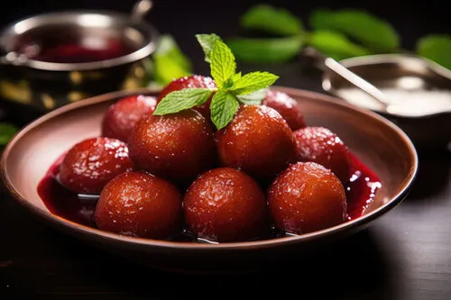
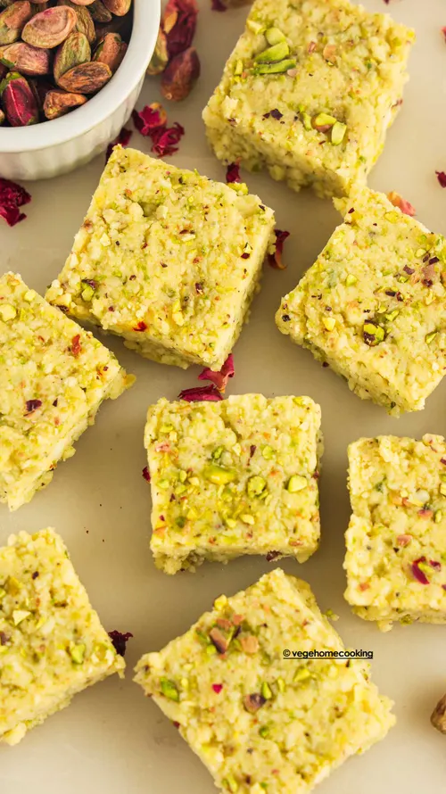

Gulab Jamun
Ingredients:
- Sugar
- Bread
- Oil
Recipe:
- Take 4 slices of bread and remove the crusts. Blend the bread into crumbs. Add 1 tablespoon of milk powder
and mix well. Add 3 tablespoons of milk and knead a soft dough. Form the dough into small, smooth balls. - Heat oil in a pan and deep fry the balls until they turn golden brown.
- In a saucepan, heat 2 cups of water and add 1 cup of sugar.
- Add the fried balls to the hot syrup and simmer for 2 minutes.

click here to buy
Kalakand
Ingredients:
- Whole Milk
- Lemon Juice
- Condensed Milk
- Rose Water
- Cardamom Powder
- Chopped Pistachios
Equipments:
- Heavy bottom pan
- Muslin cloth
- Strainer
- Greased pan or pan lined with aluminum foil or parchment paper

click here to buy